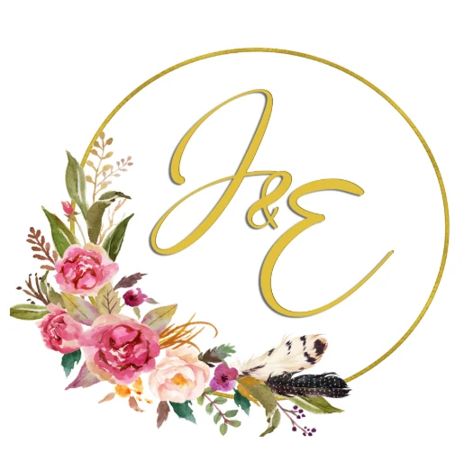
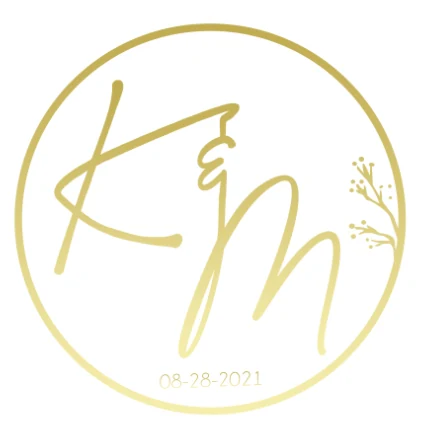
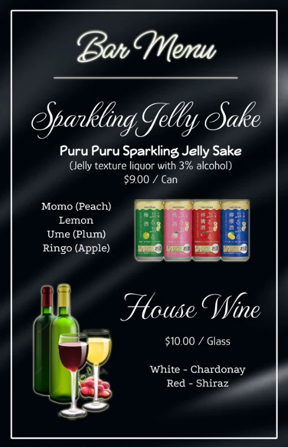
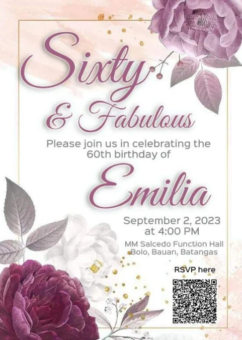
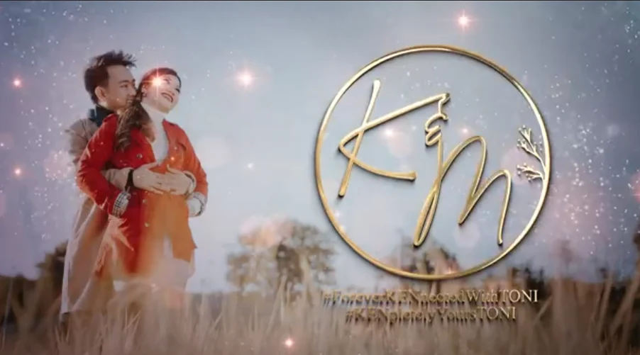
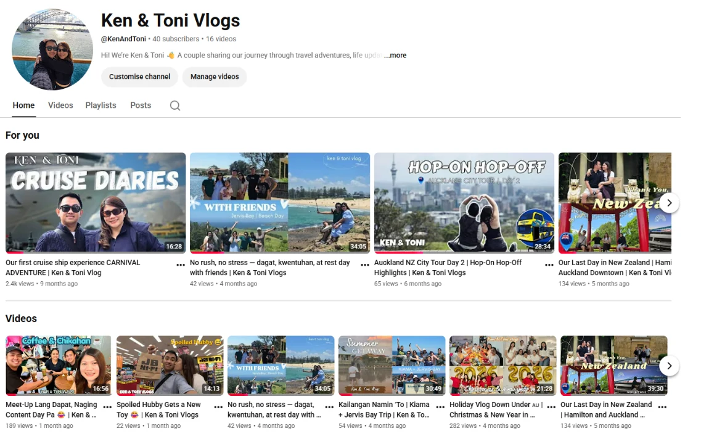

Balanced composition
Typography, imagery and spacing arranged for clear visual impact.

Selected visual work showing clear hierarchy, consistent branding and practical presentation design.
These samples demonstrate practical visual communication across logos, invitations, banners and digital layouts. Each piece is presented in its original form and organised for easy review.
Typography, imagery and spacing arranged for clear visual impact.
Colour and layout choices applied consistently across each piece.
Visuals shaped around the message, audience and intended use.






View responsive interface concepts, component layouts and user-flow prototypes in a dedicated case page.
Browse the other work categories or review the résumé for professional experience, education and credentials.